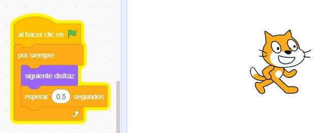
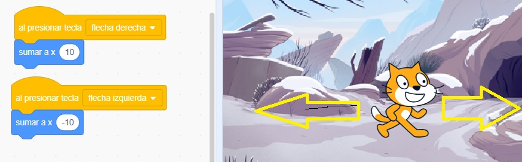
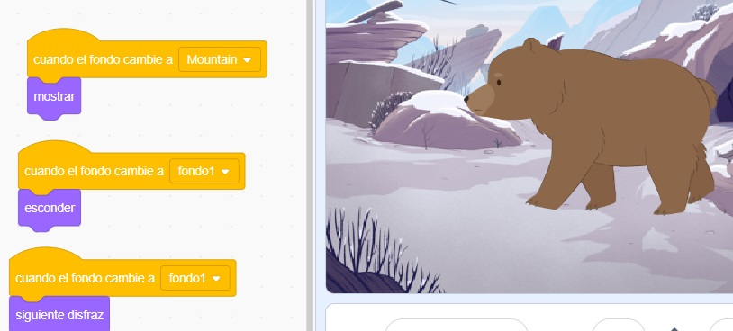

como hacer animaciones
Evento le da la accion cuando se presiona
Por siempre hara que se repita una cantidad de veces
Siguiente disfraz utiliza el siguiente disfrazas que tiene puesto
Esperar 0.5 segundos es el tiempo que se demora en animar
Como mover al perosnaje

Evento al presionar tecla indica cual presionaras en este caso
se selecciono derecha, recordemosque estamos ubicados
Importante recordar
es lo mismo como si fuera un plano cartecianoque, x 10 gira a la derecha
y x -10 a la izquierda asi igual con (Y)(-Y)
como cambiar de escenario o disfraces
 podemos darles ordenes a la plataforma en este caso utilizamos
el cambio de escenario para mostrar y esconder un objeto o sprite
tambien se puede utilziar para cambiar disfraz
Importante
Al utilizar esto puedes alterar la animacion o juego tambien puedes poner
que el objeto escriba algo o diga algo que pongas, incluso sonidos
son mas accesible movimientos, sonidos, apariencias en esta casilla